화약류관리기사 (2012-09-15 기출문제)
1과목: 일반화약학
1. slurry 폭약에 대한 설명 중 틀린 것은?
- 내수, 내습성이 양호하다.
- 물을 함유한다.
- 수공(水孔)내에서도 충전이 가능하다.
- 다른 폭약에 비해 충격이 극히 민감하다.
(정답률: 77%)

2. 약포간의 최대 순폭거리가 152mm, 약포의 직경이 38mm 일 때의 순폭도는?
- 3
- 4
- 5
- 6
(정답률: 87%)
3. 폭속이 큰 순서대로 옳게 나타낸 것은? (문제 오류로 현재 복원중입니다. 보기 내용을 아시는 분들께서는 오류 신고를 통하여 보기 작성 부탁 드립니다. 정답은 2번입니다.)
- NG > RDX > PA
- RDX > NG > PA
- RDX > PA > NG
- 복원중 (정확한 보기 내용을 아시는분께서는 오류 신고를 통하여 내용 작성부탁 드립니다.)
(정답률: 82%)
4. 국내산 2종 도화선의 평균 연소 초시 규격으로 옳은 것은?
- 평균 연소 초시 100 ~ 140초/m, 편차 ±7%이내
- 평균 연소 초시 120 ~ 140초/m, 편차 ±7%이내
- 평균 연소 초시 100 ~ 140초/m, 편차±10%이내
- 평균 연소 초시 120 ~ 140초/m, 편차±10%이내
(정답률: 83%)
5. 일반적으로 자연분해의 경향이 적어서 장기보존을 할 수 있는 물질로만 나열된 것은?
- 무연화약, 다이너마이트
- 니트로글리세린, 무연화약
- 니트로셀룰로오스, 니트로글리콜
- 피크린산, TNT
(정답률: 69%)
6. 니트로글리세린을 제조할 때 글리세린을 질화하는 과정에서 질산외에 황산을 넣는 목적에 해당하는 것은?
- 생성한 니트로글리세린을 빨리 침전시키기 위해서
- 질산 사용량을 줄여 제조 원가를 낮추기 위해서
- 질화할 때 생기는 저하시키기 위해서
- 질화할 때 생기는 수분을 제거하고 질산의 농도를 유지하기 위해서
(정답률: 85%)
7. 안정도 시험과 관계없는 시험은?
- 유리산시험
- 탄동진자시험
- 가열시험
- 내열시험
(정답률: 86%)
8. 순폭은 무엇에 의해 폭발하는 것인가?
- 자연적 분해에 의해 폭발하는 것
- 장시간 경과에 의해 폭발하는 것
- 화학 작용에 의해 폭발하는 것
- 감응에 의해 폭발하는 것
(정답률: 85%)
9. 연화의 색깔과 그에 해당하는 원료를 연결한 것 중 틀린 것은?
- 적(Red) - CuCO3
- 녹(Green) - Ba(ClO3)2
- 황(Yellow) - Na2C2O4
- 벡(White) - Al
(정답률: 81%)
10. 한국산업규격에서 정한 전기뇌관의 점화 전류시험의 조건에 해당하는 것은?
- 0.025A 의 직류 전류에서는 발화하지 않고, 0.5A 이상의 직류 전류에서는 기폭할 것
- 0.025A의 직류 전류에서는 발화하지 않고, 1.0A 이상의 직류 전류에서는 기폭할 것
- 0.25A의 직류 전류에서는 발화하지 않고 0.5A 이상의 직류 전류에서는 기폭 할 것
- 0.25A의 직류 전류에서는 발화하지 않고 1.0A 이상의 직류 전류에서는 기폭 할 것
(정답률: 85%)
11. H2SO460%, HNO3 32%, H2O 8% 조성의 혼산 100kg 으로 톨루엔을 니트로화하여 TNT 를 제조할 때 질산 32kg 이 화학양론적으로 전부 톨루엔과 반응하 였다면 DVS 값은?
- 1.50
- 2.50
- 3.50
- 4.50
(정답률: 75%)
12. H도폭선의 심약은 무엇을 사용하는가?
- Hexamine
- RDX
- HMX
- PETN
(정답률: 85%)
13. 목분 1kg 이 연소하면 약 961L 의 산소가 부족하여 산소공급제로 KNO3 를 사용한다. 이 때 산소균형을 위해 사용할 KNO3 는 약 몇 kg인가? (단, 원자량 각각 K 39, N 14, O 16 이며, KNO3 1kg당 산소는 277L 발생한다고 가정한다)
- 3.0kg
- 3.5kg
- 4.0kg
- 4.5kg
(정답률: 87%)
14. 화약류의 폭발생성 가스가 단열팽창을 할 때 외부에 대해서 하는 일의 효과는 화약의 힘과 관계된다. 이와 같은 효과에 해당하는 것은?
- 동적효과
- 폭속효과
- 내한효과
- 정적효과
(정답률: 69%)
15. 다음 중 후가스가 가장 양호한 제품은?
- 다이너마이트
- 함수폭약
- 초유폭약
- 초안폭약
(정답률: 64%)
16. 동적 위력을 표시하는 파괴효과 시험에 해당하는 것은?
- 탄동진자
- 탄동구포
- 연주시험
- 맹도
(정답률: 65%)
17. 산소 공급제로만 구성된 것은?
- NaNO3, KNO3, NH4ClO4
- BaSO4, NaCl, A
- K2SO4, CaCO3, Fe
- CuNO3, Al H2SO4
(정답률: 79%)
18. 다음 반응식과 같이 폭발하는 폭약은?(오류 신고가 접수된 문제입니다. 반드시 정답과 해설을 확인하시기 바랍니다.)
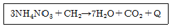
- ANFO
- TNT
- 질산구아니딘
- 콜다이트
(정답률: 85%)
19. 화합화약류에 속하는 것은?
- 질산암모늄 폭약
- 초안유제 폭약
- 흑색화약
- 니트로글리세린
(정답률: 86%)
20. 갱내에서 실제 발파시 생성될 수 있는 가스로 다음 중 독성이 가장 낮은 것은?
- 이산화질소
- 일산화탄소
- 탄산가스
- 염화수소가스
(정답률: 64%)
2과목: 발파공학
21. 다음 중 트렌치 발파에 대한 설명으로 옳지 않은 것은?
- 트렌치 발파는 계단식 발파의 형태로 계단의 폭이 매우 좁은 것이 특징이다.
- 트렌치 발파에 있어서 암반은 정상적인 계단식 발파보다 더욱 구속되어 있어 비장약량이 증가되고 비천공장이 길어진다.
- 비장약량을 감소시키기 위해 계단의 폭을 계단 높이보다 크게 하여 발파하는 방법이다.
- 트렌치 발파시 발파공은 일반적으로 수직천공을 피하고 경사천공을 실시한다.
(정답률: 23%)
22. 전기발파 시 뇌관의 결선법에 대한 설명으로 옳지 않은 것은?
- 인접되어 있는 전기뇌관의 각선을 순차적으로 연결하여 결선하는 방법이다.
- 전원에 전등선 및 동력선을 이용할 수 있다.
- 전기뇌관의 저항이 조금씩 다르더라도 상관 없다.
- 주로 대형발파에 이용된다.
(정답률: 11%)
23. 터널발파에서 경사공 심빼기에 대한 설명으로 옳지 않은 것은?
- 터널 단면이 크지 않고, 장공 천공을 위한 장비 투입이 어려운 경우에 많이 적용된다.
- 경사공 심빼기 시공에서 가장 중요한 사항은 천공 각도를 설계대로 정확히 유지하는 것이다.
- 경사공 심빼기는 암질의 변화에 대응하여 심빼기 방법을 바꿀 수 있다.
- 발파진동을 감소시키기 위해 저비중 저폭속 폭약을 사용한다.
(정답률: 15%)
24. 전색물이 갖추어야 될 조건으로 옳지 않은 것은?
- 발파공벽과의 마찰이 커야 한다.
- 압축률이 작아야 한다.
- 틈새를 쉽고 빨리 메울 수 있어야 한다.
- 불발이나 잔류폭약을 회수하기에 안전해야 한다.
(정답률: 20%)
25. 조절발파법 중 라인 드릴링(line drilling)에 대한 설명으로 옳지 않은 것은?.
- 파단 예정면에 다수의 근접한 무장약공을 천공하여 인위적인 파단면을 형성한 뒤에 발파하는 방법이다
- 일반적으로 공간격은 공지름의 2~4배 크기로 천공 한다.
- 다른 발파법에 비하여 천공수를 적게 할 수 있으며, 암반이 불균일한 곳에도 효과적인 방법이다.
- 예정 파단선상의 공들이 평행 천공이 이루어져야하기 때문에 천공 작업의 숙련이 필요하다.
(정답률: 11%)
26. 발파시 홉킨슨 효과에 의한 파괴 메카니즘을 기대하기 어려운 재료는?
- 콘크리트
- 암반
- 모르타르
- 철근
(정답률: 23%)
27. 계단식 발파에서 대괴를 얻기 위한 발파 방법으로 옳지 않은 것은?
- 균질한 암반에서 주상장약을 감소한 약장약으로하여 시행한다.
- 공간격(S)와 저항성(B)의 비(S/B)를 1보다 크게하여 시행한다.
- 제발발파를 실시한다.
- 1회에 1열 발파를 실시한다.
(정답률: 12%)
28. 건물 해체발파 전 발파대상 구조물의 주요부위에 장전된 장약의 효율을 높이기 위해 주요부위를 파쇄하는 작업을 사전 취약화 작업이라고 한다. 다음 중 일반적으로 적용되는 사전 취약화 작업의 범위에 해당하지 않는 구조물의 부위는?
- 기둥
- 내력벽
- 비내력벽
- 코아부
(정답률: 35%)
29. 수심 10m에 3m 두께의 진흙층이 쌓여있는 높이 5m의 암반을 벤치발파하려고 한다. 직경 70mm 비트로 수직 천공하고 기계식 장전하여 발파를 시행하고자 할 때 비장약량(kg/m3)은 얼마인가? (단, 수중발파에서 수직천공에 대한 비방약량은 1.1kg/m3 으로 한다)
- 2.89
- 2.20
- 1.85
- 1.41
(정답률: 16%)
30. 발파에 의한 지반진동속도 예측식의 특성에 관한 설명으로 옳은 것은?
- 심승근 환산거리를 사용하는 식은 봉상장약 또는 주상장약(column charge)을 기초로 한 것이다
- 입지상수 또는 발파진동상수 k 값은 일반적으로 연암에서 경암으로 갈수록 감소하는 경향을 보인다
- 감쇠지수 n 값은 일반적으로 연암에서 경암으로 갈수록 증가하는 경향을 보인다
- 폭원으로부터 근거리에서는 자승근 환산식이 삼승근 환산식보다 보수적인(안전한)결과를 가져온다
(정답률: 12%)
31. 폭약의 폭발로 인해 발생하는 응력파의 파장이 비교적 짧은 경우 Hookinson 효과에 의해 인장파가 발생한다고 가정할 때 자유면에 도달하는 최대 응력치가 50MPa, 파장이 1m, 암반의 동적인장강도가 5MPa이면 반사파에 의해 파단되는 평판두께는?
- 0.⑤m
- 0.06m
- 5m
- 6m
(정답률: 15%)
32. 발파에 의해 발생한 지반운동을 표시하는 변위, 입자속도, 가속도와 주파수에 대한 설명으로 옳은 것은?
- 변위는 지반진동에 의해 지반중의 입자가 압축되는 양으로 시추 코어 분석을 실시하여 측정할 수 있다
- 입자속도는 변위의 시간에 대한 변화 비율이며 이것은 속도진폭으로 표시된다
- 가속도는 변위속도의 거리에 대한 비율이며 이것은 가속도진폭으로 표시된다
- 1초 간격으로 반복되는 파의 수를 주파수라 하며 파장의 역수로 나타낼 수 있다
(정답률: 22%)
33. 발파계수 C, 공간격 S(m), 천공길이 L(m)라 할 때 프리스플리팅의 공당 장약량 W(kg)를 계산하는 관계식 으로 옳은 것은?
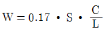
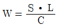
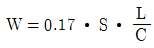
- W=C∙S∙L
(정답률: 16%)
34. 발파의 위험구역 내의 통행을 막기 위하여 경계원을 배치할 때 경계원에게 확인시켜야 하는 사항으로 옳지 않은 것은?
- 경계하는 위치
- 경계하는 구역
- 발파횟수
- 통행자 확인방법
(정답률: 24%)
35. 누드지수(n)=1.3일 때 Marescott 공식에 의해 누드 지수함수 f(n)을 구하면 얼마인가?
- 1.26
- 1.59
- 1.96
- 2.34
(정답률: 22%)
36. 보통암에서발파공단 TNT 양이 4kg이고 파쇄입자의 평균 크기가 95cm일 때 발파공당 파괴암석의 체적은 얼마인가? (단, 보통암의 암석계수는 7 이다)
- 19.50m3
- 42.⑤m3
- 78.01m3
- 124.49m3
(정답률: 31%)
37. 환경부에서 정한 생활소음.진동의 규제기준에 의하면 주거지역일 때 공사장에서 발생하는 소음은 아침시간 (⑤:00~07:00)에 얼마로 제한되어 있는가? (단, 공휴일 제외)
- 50dB(A)이하
- 60dB(A)이하
- 65dB(A)이하
- 70dB(A)이하
(정답률: 17%)
38. 공저깊이(sub drilling) 1m, 최소저항선 2.5m, 공간격 4m의 직사각형 패턴으로 천공하여 높이 10m, 길이 32m, 폭 15m의 수직벤치를 절취하려고 한다. 공당 장약량이 30kg라면 이 패턴에 대한 비장약량은?
- 0.85kg/m3
- 0.34kg/m3
- 0.29kg/m3
- 0.15kg/m3
(정답률: 16%)
39. 다음 중 지발발파에 대한 설명으로 옳지 않은 것은?
- 지발발파는 일반적으로 LP 발파와 MS 발파로 나눌 수 있다.
- MS 발파는 첫 번째 폭약의 폭발에 의한 충격작용이 사라지기전에 다음 폭약을 기폭하되 그 시간의 간격은 10ms 이내가 가장 효과적이다.
- 지발발파에서 지발전기뇌관의 시차가 짧을수록 암석은 작게 파쇄되고 멀리 비산한다.
- 시차를 임의로 선택해서 지발발파를 실시하고자 할 경우 다단식발파기 또는 비전기식뇌관을 사용한다.
(정답률: 20%)
40. 옥타브밴드의 중심주파수가 500Hz, 1000Hz, 2000Hz 일때의 청력손실이 각각 40dB, 30dB, 40dB일 때 평균청력손실은 얼마인가?
- 35dB
- 37.5dB
- 38.3dB
- 40dB
(정답률: 17%)
3과목: 암석역학
41. 다음 중 암석돌파(rock burst) 현상에 대한 설명으로 옳지 않은 것은?
- 지하 1000m 이상의 단단한 암반내에 굴착된 터널 등의 주변 암반이 급격히 붕괴되어 파괴된 암석 파편이 터널내에 돌출해 오는 현상을 말한다.
- 현지응력이 매우 크고, 암석의 파괴 후 강성이 주위 암반의 강성보다 작을 때 발생하기 쉽다.
- 암석이 Hook 탄성체에 가깝고 충분히 큰 탄성변형률 에너지를 축적할 수 있을 정도로 단단할 경우 발생하기 쉽다.
- 암석의 강도가 크고 취성이 큰 암석일수록 발생빈도가 크다.
(정답률: 20%)
42. 일축압축시험 시 시험편 양끝단과 가압판과의 사이에 발생하는 마찰효과(end effect)에 대한 설명으로 옳지 않은 것은?
- 시험편 내 마찰효과가 작용하는 부분이 상대적으로 클수록 강도는 감소한다.
- 마찰효과에 의해 시험편 양끝단에는 전단응력이 발생한다.
- 마찰효과로 인해 시험편 양끝단에 가해지는 압축응력은 주응력이 아니다.
- 마찰효과의 영향을 감소시키기 위해서는 시험편의 길이/직경의 비가 적어도 2는 되어야 한다.
(정답률: 19%)
43. 일정 수직하중 조건의 절리면 직접전단시험에서 얻어진 전단변위에 대한 수직변위 곡선의 기울기각으로 구할 수 있는 것은?
- 전단강성
- 수직강성
- 팽창각
- 마찰각
(정답률: 15%)
44. 현지암반의 연속체 안정성 해석을 위하여 실내시험을 수행한 결과, 암석의 일축압축강도가 100MPa, 인장강도가 10MPa로 측정되었다. 이 암반이 Mohr-Coulomb 파괴기준에 따른다고 한다면, 내부마찰각은 얼마인가?
- 45°
- 55°
- 65°
- 75°
(정답률: 25%)
45. 지하 100m 심도에 지하저장 공동을 굴착하려고 한다. 최대 무지보폭은 얼마인가? (단, Q분류값=5, 공동지보비 ESR=1.3)
- 4.95m
- 5.95m
- 6.95m
- 7.95m
(정답률: 21%)
46. 암반분류법인 Q 분류법에 대한 설명으로 옳지 않은 것은?
- 암반특성을 평가하여 지보량을 산정하기 위해 Barton(1974)에 의해 제안되었다.
- (RQD/Jn) 항은 암반구조를 나타내며, 최대값과 최소값 사이에서 최대 200배 차이가 난다.
- (Jr/Ja) 항은 절리면 또는 충전물의 거칠기 및 마찰 특성을 나타낸다.
- (Jw/SRF) 항에서는 터널 굴착 현장에서의 지하수압 및 현장응력 수준이 고려된다.
(정답률: 16%)
47. 암석의 탄성파속도에 대한 설명으로 옳지 않은 것은?
- 공극률이 큰 암석에서 S파속도는 함수상태에 따라 변화한다.
- 암석의 온도상승과 함께 P파속도는 감소한다.
- 암석에 작용하는 구속응력이 증가할수록 탄성파속도는 증가한다.
- 층상을 나타내는 암석에서는 층에 평행한 방향의 속도는 수직방향의 속도보다 크게 나타난다.
(정답률: 19%)
48. 현지암반의 초기응력과 측정법에 대한 설명으로 옳은것은?
- 터널 굴착 전과 후의 응력을 합하여 초기응력이라 한다.
- 수압파쇄시험에서 발생한 균열의 방향은 최소주응력 방향과 일치한다.
- 공벽변형법은 응력보상법의 일종이다.
- 심도가 깊어질수록 수평/수직응력의 비는 1에 가까워진다.
(정답률: 11%)
49. 암반 사면의 경사각을
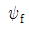
, 예상 파괴면의 경사각을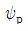
, 예상 파괴면의 마찰각을 ø라 할 경우 평면파괴가 발생할 조건으로 알맞은 것은?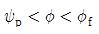
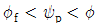
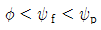
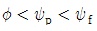
(정답률: 17%)
50. 불연속면의 방향이 굴착에 따른 터널의 안정성에 가장 불리하게 작용하는 경우로 알맞은 것은?
- 경사가 30°인 불연속면의 주향이 터널 축과 수직하고 경사방향으로 굴착하는 경우
- 경사가 60°인 불연속면의 주향이 터널 축과 수직하고 경사방향으로 굴착하는 경우
- 불연속면의 주향이 터널 축과 평행하고 불연속면의 경사가 30°인 경우
- 불연속면의 주향이 터널 축과 평행하고 불연속면의 경사가 60°인 경우
(정답률: 24%)
51. 암반에 1km 길이의 시추공을 만들었다. 다음 중 시추공을 통하여 획득할 수 있는 정보가 아닌 것은?
- 불연속면의 크기분포
- 불연속면의 방향분포
- 암반의 투수계수
- 암반의 현지응력
(정답률: 6%)
52. 일축압축시험에서 직경(D)이 2.5cm, 길이(H)가 5cm인 원주형 시험편의 강도가 900kg/cm2 였다면 이 시험편이 H/D=1 일 때의 일축압축강도는 얼마인가?
- 736kg/cm2
- 1012kgcm2
- 1472kg/cm2
- 1714kg/cm2
(정답률: 14%)
53. Schmidt 햄머를 이용하여 암석의 일축압축강도를 평가하는 경우 Schmidt 반발지수와 더불어 필요한 암석의 물성은?
- 공극률
- 단위중량
- 흡수율
- 탄성파속도
(정답률: 12%)
54. 시추공 벽면에서 공경방향의 변형은 평면응력상태와 평면변형상태에 따라 달라진다. 포아송비가 0.25일 때 (평면응력상태의 변위/평면변형률상태의 변위)의 비는 얼마인가?
- 0.82
- 0.96
- 1.04
- 1.07
(정답률: 14%)
55. 일축압축강도의 크기와 일축인장강도의 크기가 같은것으로 나타나는 파괴이론은?
- Coulomb 이론
- Giffith 이론
- Mohr 이론
- Tresca 이론
(정답률: 15%)
56. 터널설계와 관련한 경험적 설계방법 중에서 지보를 설치하지 않고 자립할 수 있는 시간을 얻기 위하여 가장 필요한 암반의 공학적 분류법은 어떤 것인가?
- 암반하중 분류법(Terzaghi 분류법)
- RMR 분류법
- RSR 분류법
- Q 분류법
(정답률: 16%)
57. 균일한 물체의 탄성정수는 5개이며 이들은 각각 종속적이다. 포아송비가 0.3인 암석에 있어서 영률, 강성률, 체적계수(bulk modulus), 레임 상수(Lame's constant)를 큰 순서대로 나열한 것은?
- 레임 상수 - 강성률 - 체적계수 - 영률
- 레임 상수 - 영률 - 체적계수 - 강성률
- 영률 - 체적계수 - 레임 상수 - 강성률
- 영률 - 강성률 - 레임 상수 - 체적계수
(정답률: 18%)
58. 탄성체가 z방향으로 구속된 평면변형률상태에서 x, y 방향의 응력이 σx, σy 이며, 포아송비가 v 일 때 z 방향의 응력 σz 는?
- σz=(1-v)(σx-σy)
- σz=(1+v)(σx+σy)
- σz=v(σx+σy)
- σz=v/2(σx+σy)
(정답률: 20%)
59. McClintock 및 Walsh의 수정 Giffith 이론식으로부터 암석의 취성도를 구하면 얼마인가? (단, 암석의 내부마찰각은 26.5° 이다)
- 6.47
- 16.47
- 26.47
- 36.47
(정답률: 17%)
60. 다음 중 Burgers 물체의 역학적 모형에 대한 설명으로 옳은 것은?
- Maxwell 모형과 Kelvin 모형을 병렬로 연결한 형태이다.
- 암석의 순간적 탄성변형, 1차 및 2차 Cleep 거동을 나타낼 수 있다.
- Burgers 물체에 응력이 가해지면 순간적으로 탄성 변형률이 발생하고 이후에는 비선형적으로 변형률이 감소하게 된다.
- Burgers 물체에 가해진 응력을 제거하면 발생한 모든 변형률은 시간이 경과함에 따라 회복하게 된다.
(정답률: 27%)
4과목: 화약류 안전관리 관계 법규
61. 화약류 1급저장소와 보안물건 사이에 흙둑을 쌓은 경우, 폭약20톤을 저장시 제2종 보안물건과의 보안거리의 기준으로 맞는 것은?
- 310m 이상
- 290m 이상
- 270m 이상
- 250m 이상
(정답률: 15%)
62. 화약류 저장소의 설치허가신청을 할 때 저장소 및 그 부근의 약도를 허가신청서에 첨부하여야 하는데 약도의 범위로 옳은 것은?
- 사방 200m 이내
- 사방 300m 이내
- 사방 400m 이내
- 사방 500m 이내
(정답률: 28%)
63. 운반표지를 하지 아니할 수 있는 화약류의 운반수량으로 맞는 것은?
- 100kg 이하의 폭약
- 1천개 이하의 공업용뇌관 또는 전기뇌관
- 1만개 이하의 총용뇌관
- 1000미터 이하의 도폭선
(정답률: 17%)
64. 학교. 연구소 등 공인된 기관에서 물리.화학상의 실험용으로 도폭선을 사용할 때 1회의 사용량은? (단, 사용허가를 받지 않고 사용할 수 있는 수량)
- 500m 이하
- 400m 이하
- 300m 이하
- 200m 이하
(정답률: 25%)
65. 광업법에 의하여 광물의 채굴을 하는 사람이 광물의 채굴을 목적으로 허가를 받지 않고 양수할 수 있는 폭약의 수량은?
- 1255g 이하
- 1225g 이하
- 1155g 이하
- 1125g 이하
(정답률: 21%)
66. 동일 차량에 함께 실을 수 있는 화약류를 나타낸 것으로 옳지 않은 것은?
- 폭약 - 포경용 신관
- 화약 - 실탄. 공포탄
- 도폭선 - 공업용 뇌관
- 실탄. 공포탄 - 신관(포경용 제외)
(정답률: 5%)
67. 다음 중 화약류관리보안책임자의 결격사유로 옳지 않은 것은?
- 색맹이거나 색약인 사람
- 화약류관리보안책임자 면허를 갱신하지 않아 동면허가 취소되어 1년이 지나지 않은 사람
- 총포. 도검. 화약류 등 단속법을 위반하여 벌금 200만원을 선고받고 확정된 후 3년이 지나지 않은 사람
- 총포. 도검. 화약류 등 단속법을 위반하여 금고 이상의 형의 집행유예를 선고받고 그 집행유예의 기간이 끝난 날로부터 1년이 지나지 않은 사람
(정답률: 16%)
68. 화약류관리보안책임자가 화약류의 취급 전반에 관한 안전상의 감독업무를 위반하였을 때의 벌칙은?
- 5년 이하의 징역 또는 1천만원 이하의 벌금
- 3년 이하의 징역 또는 700만원 이하의 벌금
- 2년 이하의 징역 또는 500만원 이하의 벌금
- 1년 이하의 징역 또는 300만원 이하의 벌금
(정답률: 15%)
69. 대발파의 기술상의 기준으로 옳지 않은 것은?
- 갱도의 굴진작업을 하는 때에는 그 작업에 필요한 최소량의 화약류만 가지고 들어갈 것
- 발파의 계획과 작업은 1급 화약류관리보안책임자 또는 2급 화약류관리보안책임자로 하여금 직접하게 할 것
- 약포는 약실에 밀접하게 장전하고 습기가 차지 않게 할 것
- 갱안의 도폭선과 전선을 간단하게 배선할 것
(정답률: 39%)
70. 지상 복토식 1급저장소의 위치. 구조 및 설비의 기준에 대한 설명으로 옳지 않은 것은?
- 저장소의 벽은 2중으로 하고, 바깥쪽 벽은 두께 20cm 이상의 철근콘크리트로 한다.
- 저장소의 안쪽 벽과 바깥쪽 벽과의 공간에 습기가 차지 아니하도록 방수설비를 한다.
- 저장소의 복토(출입구쪽의 부분은 제외)는 45°이하의 경사로 하고, 복토의 두께는 3m 이상으로 한다.
- 마루는 기초에서 30cm 이상의 높이로 한다.
(정답률: 5%)
71. 화약류를 운반하는 사람이 화약류 운반 신고필증을 지니지 않았을 경우 벌칙 내용으로 맞는 것은?
- 300만원 이하의 과태료
- 200만원 이하의 과태료
- 150만원 이하의 과태료
- 100만원 이하의 과태료
(정답률: 20%)
72. 화약류의 포장기준으로 옳지 않은 것은?
- 화약류는 위장하거나 다른 물건과 혼합 포장하여 소지. 저장. 운반하여서는 안된다.
- 화약류는 그 화약류와 화학작용을 일으키지 아니하는 속포장에 넣은 다음 경찰청령이 정하는 겉포장에 넣어야 한다.
- 초유폭약, 함수폭약의 경우는 속포장을 하지 않을 수 있다.
- 속포장 및 겉포장에는 화약류의 종류, 수량, 성능, 제조소명, 제조년월일 등을 기재하여야 한다. (다만, 기재가 곤란한 속포장은 그러지 않아도 된다)
(정답률: 16%)
73. 초유폭약에 의한 발파의 기술상의 기준으로 옳지 않은 것은?
- 장전 후에는 가급적 신속히 점화할 것
- 가연성 가스가 0.5% 이상이 되는 장소에서는 발파를 하지 말 것
- 금이 가고 틈이 벌어지거나 공동이 있는 천공된 구멍에는 지나치게 장약을 하는 일이 없도록 할 것
- 불발된 천공된 구멍으로부터 초유폭약 또는 메지 등을 제거하는 때에는 압축공기를 사용하여 신속히 제거할 것
(정답률: 20%)
74. 화약 및 화공품의 종류에 따라 폭약 1톤으로 환산하는 수량을 기술하는 것 중 옳지 않은 것은?
- 총용뇌관 250만개
- 실탄 또는 공포탄 200만개
- 신관 또는 화관 10만개
- 도폭선 50km
(정답률: 20%)
75. 화약류 운반방법의 기술상의 기준으로 맞는 것은?
- 화약류는 주로 주변이 한가한 야간에 적재할 것
- 차량으로 운반하는 때에는 그 차량의 폭에 2.5m를 더한 너비 이하의 도로를 통행하지 아니할 것
- 야간이나 앞을 분간하기 힘든 경우에 주차하고자 하는 때에는 차량의 전방과 후방 15m 지점에 적색 등불을 달 것
- 니트로셀룰로오스는 수분 또는 알코올성분이 20% 정도 머금은 상태로 운반할 것
(정답률: 19%)
76. 화약과 비슷한 추진적 폭발에 사용될 수 있는 것으로서 대통령령이 정하는 것은?
- 크롬산납을 주로 한 화약
- 펜트리트를 주로 한 화약
- 피크린산을 주로 한 화약
- 니트로글리세린을 주로 한 화약
(정답률: 28%)
77. 다음 중 보안물건에 대한 설명으로 옳지 않은 것은?
- 국도. 고압전선은 제4종 보안물건이다.
- 철도. 발전소는 제3종 보안물건이다.
- 촌락의 주택은 제2종 보안물건이다.
- 학교. 공원은 제1종 보안물건이다.
(정답률: 13%)
78. 화약류(초유폭약을 제외한다) 발파의 기술상의 기준으로 틀린 것은?
- 한번 발파한 천공된 구멍에 다시 장전하지 아니할 것
- 발파준비작업이 끝난 후 화약류가 남는 때에는 지체 없이 폐기할 것
- 동일인의 연속점화수는 도화선 1개의 길이가 1.5m 이하인 때에는 5발 이하로 할 것
- 발파하고자 하는 장소에 누전이 되어 있는 때에는 전기발파를 하지 아니할 것
(정답률: 24%)
79. 다음 중 간이저장소의 화약류 최대저장량으로 옳지 않은 것은?
- 화약 - 30kg
- 공업용뇌관 및 전기뇌관 - 5000개
- 도폭선 - 1500m
- 총용뇌관 - 30000개
(정답률: 17%)
80. 장남감용 꽃불류의 성능의 기준으로 옳지 않은 것은?
- 날기를 주로 하는 것은 지상으로부터 높이가 10미터 이하인 것
- 회전을 주로 하는 것은 지속 연속시간이 10초 이하인 것
- 딱총화약(안전화약)은 불연제로 표면을 입힐 것
- 연소시 발생하는 소리가 10미터 떨어진 거리에서 85데시벨 이하인 것
(정답률: 24%)
5과목: 굴착공학
81. 터널 굴착에 따른 지하수 및 지표수 등 터널 내 용수를 처리하기 위하여 적용하는 지수공법에 해당하지 않는 것은?
- 주입공법
- 압기공법
- 동결공법
- 웰포인트공법
(정답률: 21%)
82. 암반의 단위중량이 깊이에 따라 선형적으로 증가하는 경우 지하 500m에서의 초기수직응력은 얼마인가? (단, 지표와 지하 1000m에서의 단위중량은 각각 25, 27kN/m3이다)
- 12.0MPa
- 12.75MPa
- 13.0MPa
- 13.75MPa
(정답률: 30%)
83. 다음 중 숏크리트의 작용 효과에 해당하지 않는 것은?
- 낙석의 방지효과
- 내압 효과
- 지반 아치 형성 효과
- 빔 형성 효과
(정답률: 40%)
84. 터널 계측 항목 중 지반 조건에 따라 일상계측에 추가하여 선정하는 정밀계측이 아닌 것은?
- 지중변위 측정
- 록볼트 축력측정
- 록볼트 인발시험
- 라이닝 응력측정
(정답률: 13%)
85. 암반이 매우 연약하여 팽윤 또는 유동하는 상태의 암반을 분류하는데 가장 적절한 방법은?
- RMR 분류법
- Q 분류법
- RSR 분류법
- SMR 분류법
(정답률: 24%)
86. 다음 그림에서 미끄러짐이 일어나려는 순간의 극한 평형 상태를 옳게 표현한 것은?
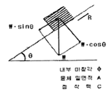
- tanø = CA + W∙sinθ∙cosθ
- CA + W∙sinθ = W∙sinθ∙tanø
- W∙cosθ = CA + W∙sinθ∙tanø
- W∙sinθ = CA + W∙cosθ∙tanø
(정답률: 12%)
87. 다음 그림과 같이 지하수위가 지표와 일치되는 반무한 사질토 사면이 놓여 있다. 사면의 안전율은 얼마인가? (단, 흙의 비중(Gs)=2.65, 공극률(n)=50%, 내부마찰각(ø)=35°, 사면의 경사각=15°)
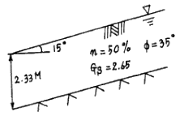
- 1.18
- 1.31
- 2.33
- 2.61
(정답률: 4%)
88. NATM 시공을 위해 지질조사를 계획하여 실시할 때 중요시 해야 할 사항으로 옳지 않은 것은?
- 용수량, 용수압
- 팽압의 유무
- 암반의 유도응력상태
- 암반의 자립성
(정답률: 15%)
89. 다음 그림은 스테레오 투영법에 의해 한 개의 평면 (불연속면)을 투영하는 경우를 나타내는 것인다.그림에 나타난 표기에 대한 설명으로 옳지 않은 것은?
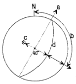
- a : 주향(strike)
- b : 경사(dip)
- c : 극점(pole)
- d : 대원(great circle)]
(정답률: 17%)
90. 암반 내 지하공동의 안정에 영향을 미치는 요인으로 가장 거리가 먼 것은?
- 공동의 방향
- 공동의 크기
- 공동 상호간의 거리
- 공동의 형상
(정답률: 12%)
91. 단위 중량이 1.8t/m3이고, 내부마찰각이 30°인 정지상태의 사질토층이 있다. 지표면 아래 10m 깊이에서의 수직응력 (σu)과 수평응력(σh)으로 옳은 것은?
- σu=18t/m2, σh=12t/m2
- σu=18t/m2, σh=9t/m2
- σu=18t/m2, σh=4t/m2
- σu=18t/m2, σh=2t/m2
(정답률: 37%)
92. 다음 중 터널의 수평분할 굴착공법이 아닌 것은?
- 측벽선진도갱공법
- 가인버트 공법
- 다단벤치 컷 공법
- 미니벤치 컷 공법
(정답률: 14%)
93. 다음 중 터널시공 시 방수공에 대한 설명으로 옳지 않은 것은?
- 지하수위보다 깊은 터널에서는 지하수 용출을 완전히 막을 수 있는 방수공을 채택하여야 한다.
- 방수공은 면상 방수공과 선상 방수공으로 대별할 수 있고 선상 방수공은 뿜칠방식과 시트방식으로 나뉜다.
- 방수 시트는 콘크리트 타설시에 파손되지 않는 강도 및 내구성, 시공성이 좋은 것을 선정하여야 한다.
- 복공 완료 후의 이어붓기 이음이나 균열에서의 누수는 도수공법이나 지수주입법을 사용한다.
(정답률: 30%)
94. 다음 중 전면 접착형 록볼트의 종류가 아닌 것은?
- 모르타르 정착형
- 퍼포형(Perfo-sleeve anchor)
- 자천공형
- 쐐기형
(정답률: 6%)
95. 수평응력과 수직응력이 각각 2.4t/m2와 4.8t/m2가 작용하고 있는 암반내에 직경3m의 원형터널을 굴착하였다. 터널 측벽에 작용하는 접선응력은 얼마인가?
- 3t/m2
- 7t/m2
- 12t/m2
- 21t/m2
(정답률: 21%)
96. 흙의 통일분류법에서 사용되는ㅎ 제1문자에 대한 설명으로 옳지 않은 것은?
- G : 자갈
- S : 모래
- M : 유기질토
- Pt : 이탄
(정답률: 7%)
97. 다음 중 기계 굴착법에 해당되지 않는 것은?
- TBM 공법
- Shield 공법
- 로드헤더 공법
- 메세르 공법
(정답률: 16%)
98. 다음 중 NATM 공법의 원리에 대한 설명으로 옳지 않은 것은?
- 터널을 근본적으로 지지하는 요소는 록볼트, 숏크리트, 콘크리트 라이닝 등과 같은 지보공이다.
- 암반의 이완 또는 이로 인한 변형을 최대한 방지하여야 하며 이를 위해 숏크리트를 타설한다.
- 시공 중에 암반의 변위를 계속적으로 계측하여 그 결과를 콘크리트 라이닝의 방법이나 시기를 결정하는데 이용한다.
- 시기적절하게 콘크리트 라이닝을 실시함으로서 지보의 효과를 보다 높이는 일이 중요하다.
(정답률: 10%)
99. 다음의 화성암 중 화산암에 해당하는 것은?
- 감람암
- 섬장암
- 반려암
- 안산암
(정답률: 15%)
100. 사면에 적용할 수 있는 안정화 공법에는 사면보호 공법과 사면보강공법 등이 있다. 다음 중 사면보호공법에 해당하는 것은?
- 앵커공법
- 배수공법
- 경사완화공법
- 억지말뚝공법
(정답률: 19%)